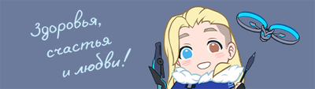
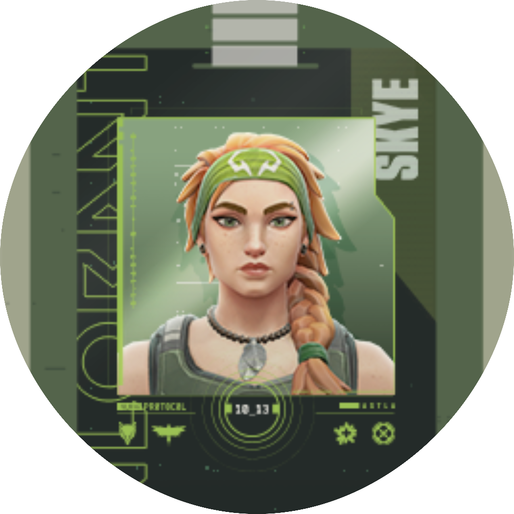
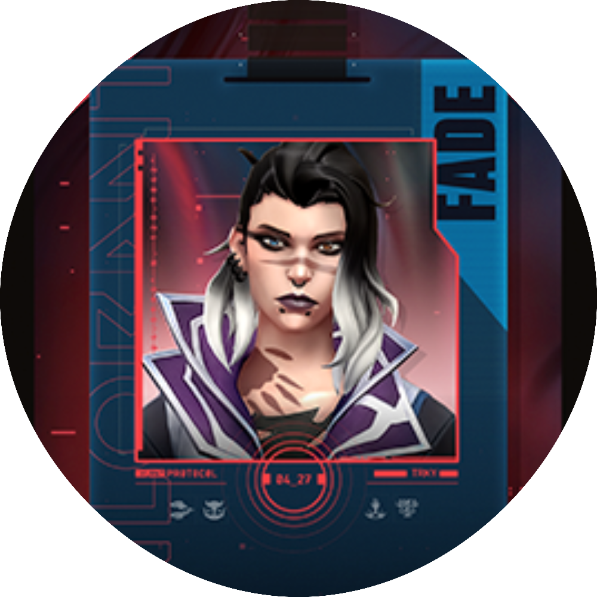
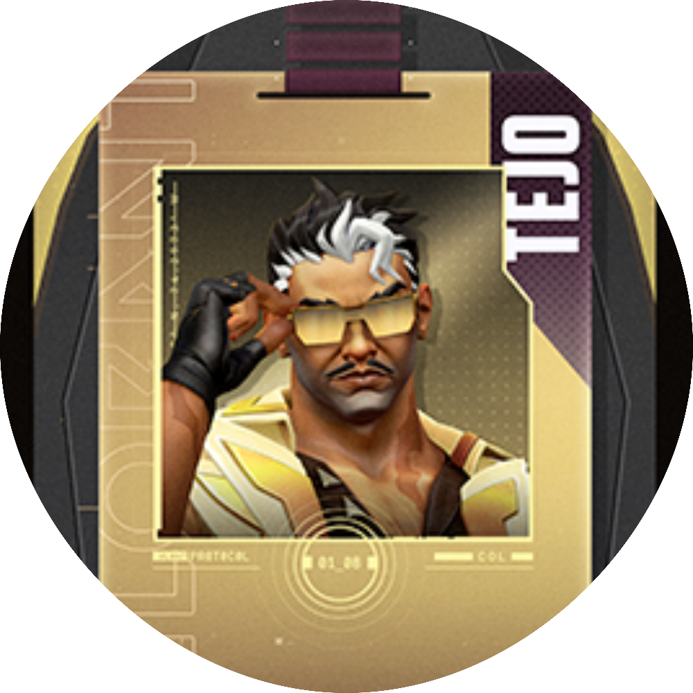
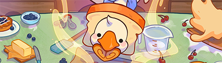
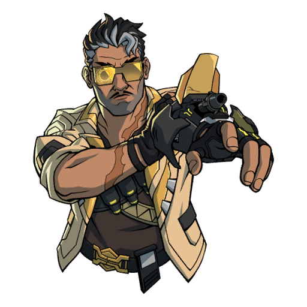
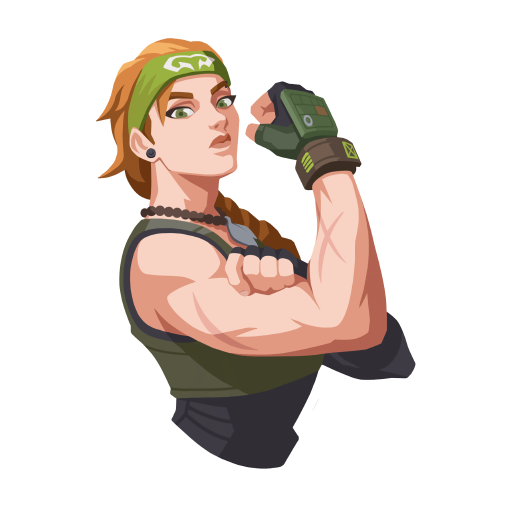

Skye · Fade · Tejo — как они начинают раунд и ломают оборону врага

Австралийская инициаторша, которая исцеляет и разведывает одновременно. Её звери — Тасу и Флеш-птица — прощупывают позиции врага, ослепляют и дают безупречную информацию. Skye не просто начинает раунд — она заставляет врагов выходить из укрытий, а команду получать хил и контроль. Идеальный пик для агрессивного энтри с поддержкой тиммейтов.

Турецкий кошмар для вражеской команды. Её Пожиратель страха и Призрачные глаза проходят сквозь стены, отмечая цели и накладывая оглушение. Fade — истинный зачинщик: её ульт «Ночь страха» заставляет врагов разбегаться, слышать шаги в панике. Никто не собирает инфу лучше неё. Она не просто атакует — она охотится.

Мастер подавления и дезориентации. Его специальная винтовка с зонными ЭМИ-снарядами отключает способности врагов, а дроны-разведчики висят над точкой, вынуждая защитников покидать удобные позиции. Tejo начинает перестрелку ещё до первого выстрела — враги уже оглушены и без утилит. Идеальный зачинщик для слаженной команды, которая любит методичные зачистки.
Тасу (тигр) вынюхивает врагов, а исцеление возвращает союзников в строй.
Отмечает цели сквозь стены — враг не спрячется, каждый угол под контролем.
Блокирует способности вражеских агентов и ломает любую установку.
Пошаговые протоколы инициации — от разведки до пост-плэнта

Перед заходом на точку Skye запускает Тасу (разведывающего тигра) по ключевым углам. Если зверь «чует» врага — команда получает точный пинг + ослепление цели. Одновременно с этим птичка-ослепитель сбивает прицелы врагам. Skye мгновенно даёт тиммейтам зелёный свет на энтри. Зачинщик не просто врывается — он заставляет врагов паниковать и выбегать под обстрел.

Fade кидает «Призрачный глаз» (Prowler) в сторону пиков — он автоматически двигается к отмеченному врагу, оглушая его. А главная фишка: ульт «Ночь страха». Волна страха пронзает стены, отмечает всех противников, оставляет следы шагов. Команда видит врагов как на ладони, а зачинщики (Skye/Tejo) добивают беспомощные цели. Инициация превращается в кровавую охоту.
Пока Skye и Fade собирают инфу, Tejo запускает дрон-Stealth Wing над точкой. Враг не видит дрон, но зона ЭМИ подавляет все способности на 8 секунд. Cypher не ставит ловушки, Killjoy не включит турель, а Viper не активирует дым. После подавления следует залп специальных гранат. Tejo — король вступительных фаз: враги становятся просто мишенями без скиллов. Зачинщик превращает оборону в руины.

После установки спайка Skye исцеляет союзников, Fade держит «Пожирателя» на подходе, а Tejo закидывает подавляющие сферы на точки входа врага. Три инициатора вместе создают непробиваемую стену: враг ослеплён, оглушён и лишён скиллов. В таком режиме даже 3 на 5 превращается в победу. Вот почему Skye, Fade и Tejo — идеальные зачинщики для любого состава.
Как выжать максимум из Skye, Fade и Tejo
Твой тигр (Тасу) не только ослепляет врага, но и даёт звуковой сигнал при обнаружении. Запускай его перед входом на точку — если тигр «чихнул» и побежал, значит, там есть враг. Не экономь на разведке: информация стоит дороже любой способности. Также помни, что птичку-ослепитель можно контролировать в полёте — наводи её прямо в лицо оппоненту через угол.
Исцеление (Regrowth) работает по области, но прерывается при получении урона. Прячься за укрытие, пока лечишь тиммейтов — так ты не потеряешь концентрацию.
Призрачный глаз (Prowler) двигается к последнему отмеченному врагу. Поэтому перед его запуском обязательно кинь «Ночной дар» (Haunt) — он отметит врагов даже сквозь стены. Тогда Prowler сам найдёт цель и оглушит её. Это идеальная связка для зачистки углов. Кроме того, ульт «Ночь страха» оставляет следы шагов на 12 секунд — используй его, когда враги пытаются перегруппироваться.
Твои сферы страха (Seize) блокируют не только передвижение, но и способности. Кидай их в чокпоинты (узкие проходы), чтобы запереть врагов в ловушку.
Твоя ЭМИ-сфера отключает способности врага на 8 секунд. Запускай её перед заходом на точку — Киллиджой лишится турели, Сайфер — ловушек, а Випер не сможет активировать дым. Без утилит враги становятся просто мишенями. Также используй дрон Stealth Wing для разведки: он невидим для врагов, но видит их тепловые следы.
Постилль специальных гранат Special Delivery можно рикошетить от стен. Тренируй углы — так ты будешь доставать врагов за укрытиями, даже не видя их.
Зачинщик не должен играть в одиночку. Всегда координируй свои действия с Джетт, Рейной или Фениксом. Перед тем как запустить ослепление/разведку, скажи в голосовой чат: «Вхожу через 3, 2, 1 — лови флешку». Тогда дуэлянт сразу зайдет на добивание. Также не забывай про ретроспективу: после смерти давай команде точные координаты врага (например, «баня, за бочкой, 30 хп»).
Всегда имей план Б. Если первый заход провалился, быстро меняйте точку атаки — инициаторы дают информацию для быстрого ротейта.